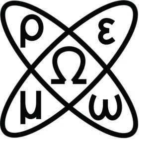

Разработкой, производством и поставкой представленного геофизического оборудования занимается ООО “КБ Электрометрии”. Компания осуществляет внедрение методов электроразведки в различные сферы народного хозяйства, а также обеспечивает информационную, методическую и сервисную поддержку по продукции.
Также компания осуществляет научно-исследовательскую деятельность в области геофизики, производит работы с применением различных методов электроразведки, а также проводит комплекс мероприятий, направленных на усовершенствование продукции.
Компания предлагает комплексные геолого-геофизические сервисные услуги, включая бурение, лабораторные и полевые исследования.
Задачи решаемые с помощью методов электроразведки:
– инженерные геофизические изыскания;
– разведка строительных площадок;
– анализ состояний систем трубопроводов коммунального хозяйства;
– почвоведение;
– археологические исследования;
– экологическая оценка загрязнения;
– качественная оценка водонасыщенности грунта;
– поиск источников соленой и пресной воды;
– локализация и мониторинг подземных сооружений и коммуникаций;
– обнаружение и локализация захоронений промышленных отбросов любого химического состава;
– поиск источника утечки и оценка объема утечки из магистральных трубопроводов газонефтепродуктов;
– поиск залежей полезных ископаемых на глубины до 250 м.
Организуя поставку высокотехнологичного оборудования – нашей компанией проводится предварительный анализ сферы применения; первичная консультация о возможных вариантах реализации, поставленной клиентом задачи; обучение работе с оборудованием; осуществляется гарантийное и послегарантийное обслуживание.
Наша цель – развитие долгосрочных взаимовыгодных отношений с партнерами и клиентами. Предоставление профессиональной информационной и технической поддержки. Участие в приоритетных направлениях развития научно-технологического комплекса России.
